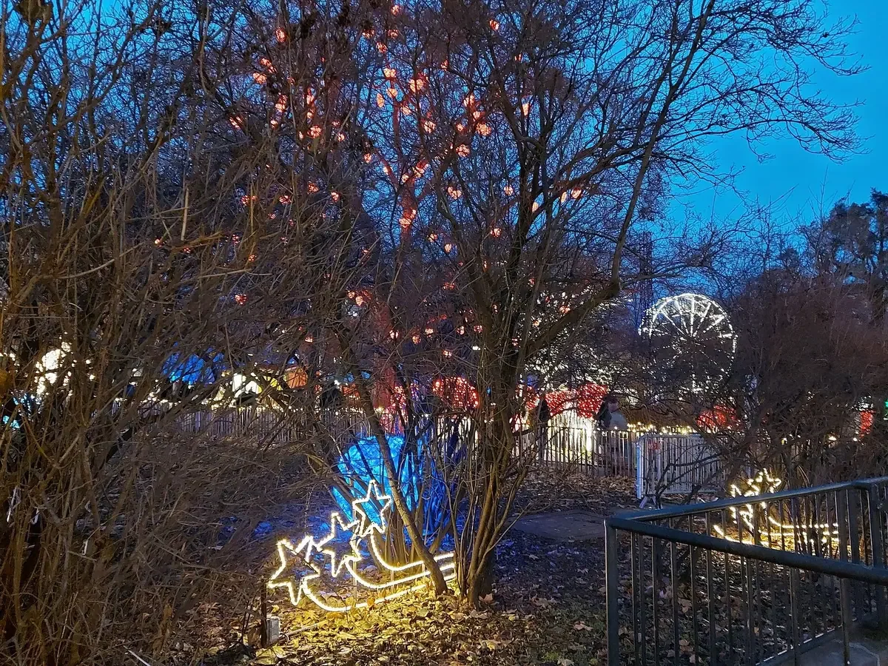
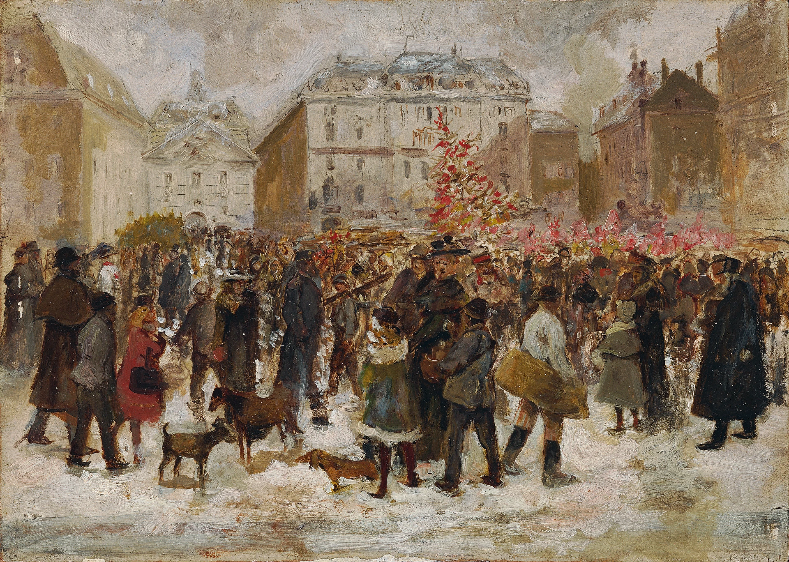
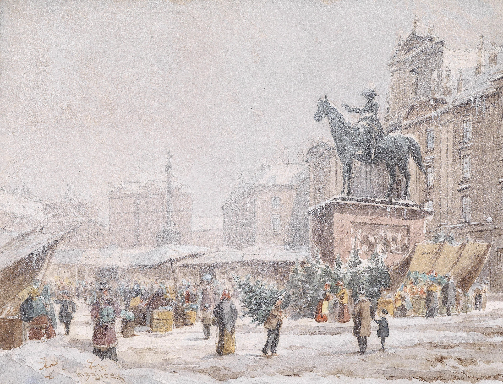
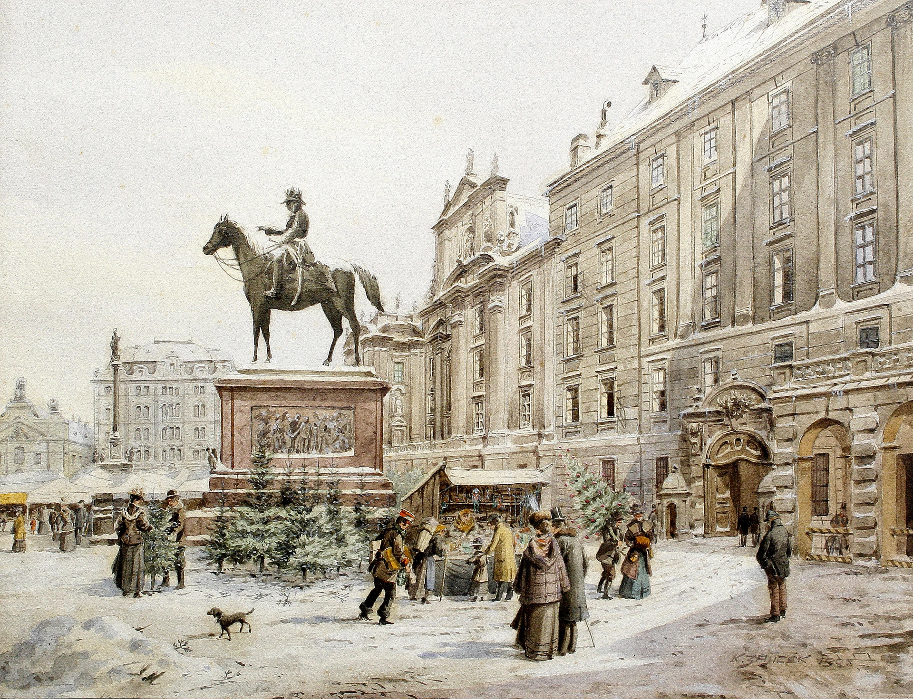
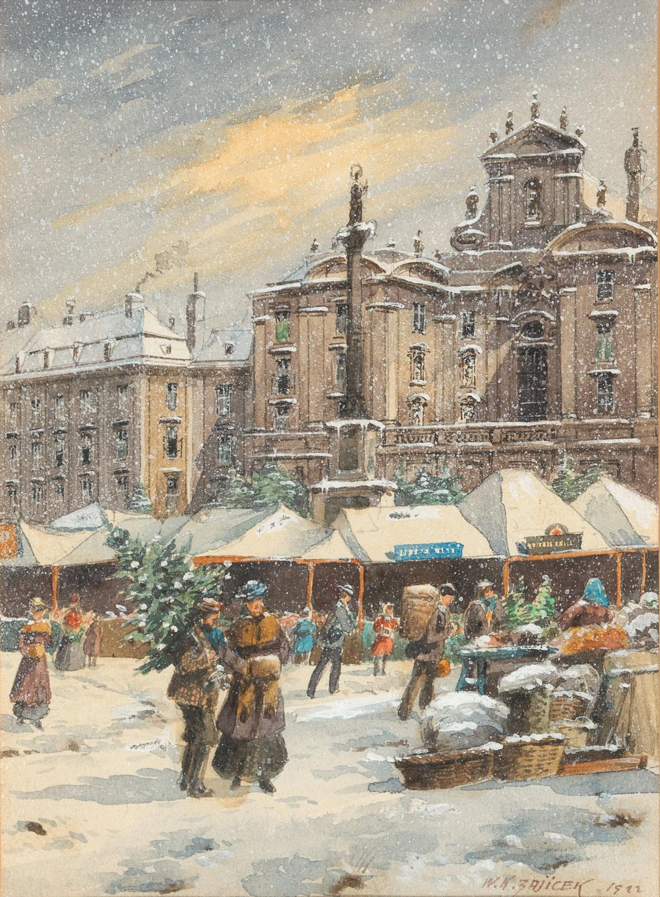
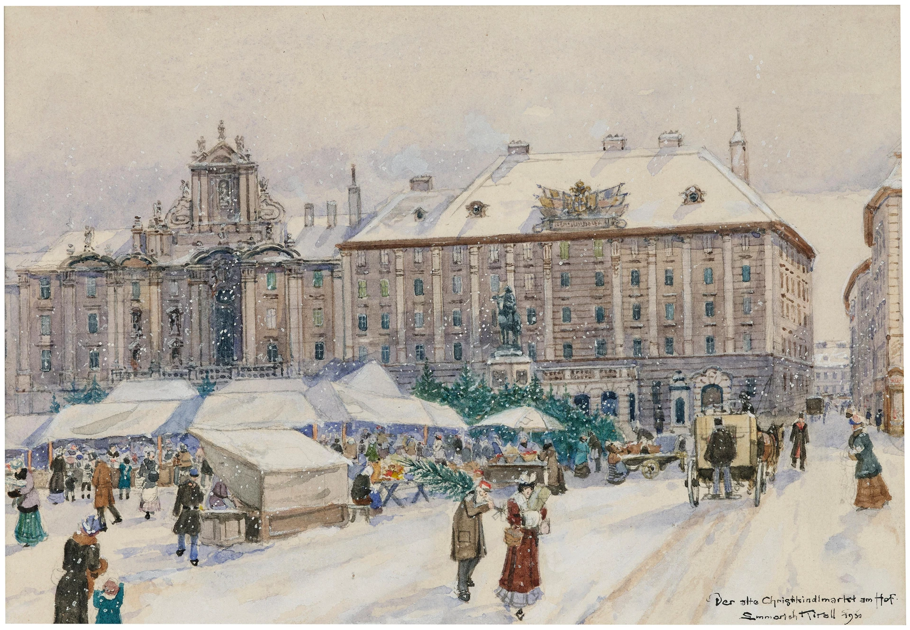
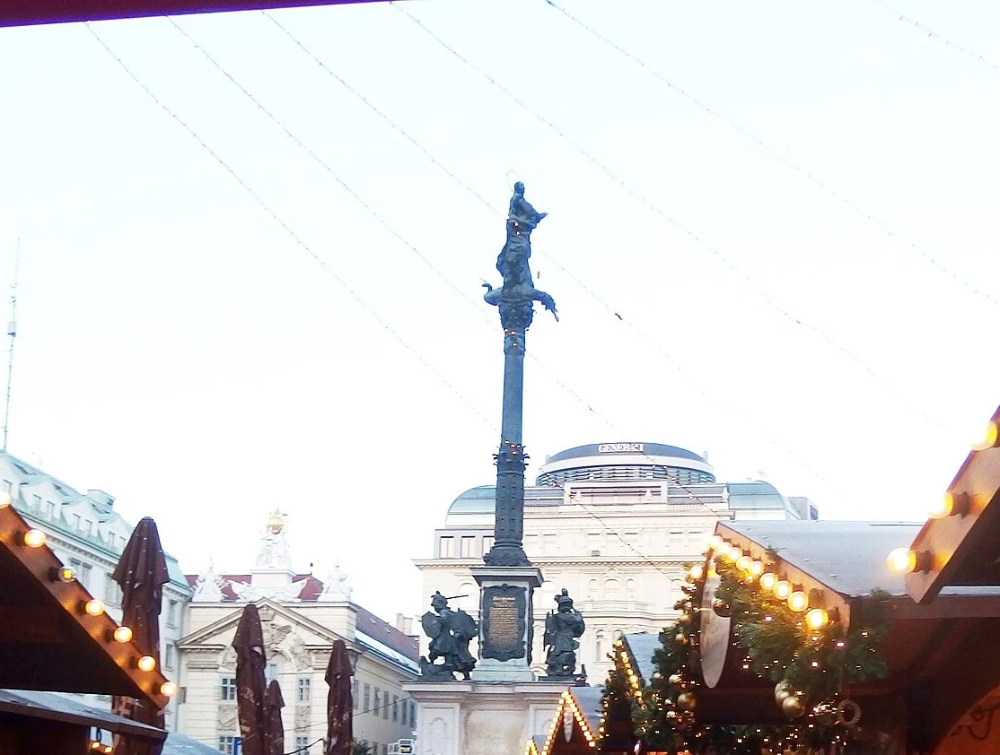

아직 펼치지 않은 카드아기 예수의 장터 · 3빈 성탄 시장빈의 성탄 시장은 흔히 ‘700년이 넘은 전통’이라고들 해요. 정말 그럴까요?빈 성탄 시장은 몇 살일까?
1843년 ~ 오늘오스트리아 빈 · 암호프 광장
빈 성탄 시장
오스트리아 빈의 암호프 광장에는 1843년부터 해마다 12월 5일 ‘구유 시장’ 가게 132채가 섰어요. 그 뒤 80년 동안 이 광장은 빈 성탄 장의 집이었어요. 같은 광장을 그린 그림들 사이로 시간 막대를 밀어, 장이 머물고 떠나고 돌아온 겨울들을 지나가 보세요.
빈이라는 도시의 광장에 옛날부터 성탄 장이 섰대. 시간 막대를 밀면 옛날 그림이 오늘 사진으로 바뀌어!
검수 전 시안이에요(기준서 2판). 장면에는 빈 시의 기록과 그림에 있는 것만 옮겼고, 그림의 때를 짐작한 곳은 그렇다고 밝혔어요. 상상은 ‘눈 감고 상상해 보기’에만 썼어요.
시안 확인용카드 단계 미리 보기
1
12월 5일, 구유 가게 132채
오스트리아 빈 구시가의 암호프 광장. 1842년에 성탄 장이 임시로 이곳에 왔고, 1843년부터는 해마다 12월 5일에 ‘구유 시장’ 가게 132채가 서서 새해 첫날까지 이어졌어요.
이 그림은 에른스트 유흐가 1883년 뒤 어느 겨울에 그린 작은 유화예요(13×18cm). 눈 덮인 광장이 사람들로 가득해요.

빈의 성탄 장은 그보다 오래되었어요. 1626년의 기록에는 슈테판 대성당 앞 그라벤과 브란트슈테테에 오두막이 서고, 빵 굽는 사람과 생강빵 장수, 과자 장수가 물건을 팔았다고 나와요. 오두막은 12월 16~17일에 세우고 1월 9일에 걷었어요.
눈 덮인 광장이 사람들로 꽉 찼어. 강아지들도 있어!
물어보기이 광장의 가게에서는 무엇을 팔았을까?
2
전나무를 메고, 전깃불 아래
1872년, 빈 시 의회는 오래된 장들을 없애기로 했지만 성탄 장만은 남겼어요. 1903년에는 가게 128채를 새로 꾸미고, 처음으로 전깃불을 밝혔어요.
빈의 화가 카를 벤첼 자이체크는 이 광장의 성탄 장을 여러 번 그렸어요. 이 수채화에서는 한 사람이 전나무를 어깨에 메고 눈길을 걸어가요.

오른쪽의 말 탄 동상은 1892년부터 1912년까지 이 광장에 서 있던 라데츠키 장군 동상이에요. 동상이 보이니, 1912년 전의 광장 모습이에요.
1900년 무렵, 눈 내린 암호프의 장에 간 빈의 아이라면 무엇을 안고 집에 갔을까요?
눈 오는 날, 전나무를 어깨에 메고 가는 사람이 있어!
물어보기너라면 이 장에서 무엇을 사 가고 싶어?
3
광장이 지나온 네 겨울
이제 시간 막대를 밀어, 같은 광장을 그린 네 때를 차례로 지나가 보세요. 화가마다 바라본 방향은 조금씩 달라요.
광장 한가운데의 성모 기둥은 1667년 12월 8일에 세웠어요. 무엇이 떠나고 무엇이 남았는지 견주어 보세요.
시간 막대를 밀거나 해를 눌러, 암호프 광장의 네 겨울을 지나가 보세요.




1908년 · 카를 벤첼 자이체크, 「빈 암호프의 성탄 장」, 1908년 수채화 · 그림: 카를 벤첼 자이체크 · 퍼블릭 도메인 · 위키미디어 공용(본햄스 경매 기록)1922년 · 카를 벤첼 자이체크, 「암호프의 성탄 장」, 1922년 수채화 · 그림: 카를 벤첼 자이체크 · 퍼블릭 도메인 · 위키미디어 공용(도로테움 경매 기록)1930년 · 에메리히 키랄, 「옛 크리스트킨들마르크트 암호프」, 1930년 수채화 · 그림: 에메리히 키랄 · 퍼블릭 도메인 · 위키미디어 공용(도로테움 경매 기록)2018년 · 오늘의 암호프 광장 성탄 장, 2018년 12월 · 사진: Palickap · CC BY-SA 4.0 · 위키미디어 공용 · 사람들이 보이는 아래쪽을 잘라 냄
동상은 떠나고 장은 떠돌았지만, 성모 기둥은 1667년부터 그 자리를 지켰어요.
1923년 장은 프라이웅 광장으로 떠났어요. 그 뒤 슈테판 대성당 앞(1924~1928), 노이바우귀르텔(1929)을 떠돌다 1938년 이 광장으로 돌아왔어요. 전쟁 뒤에도 자리를 옮겨 다니다, 1975년 공사 때문에 임시로 시청 앞 광장으로 옮겨 갔어요. 오늘 시청 앞 광장의 크리스트킨들마르크트가 바로 그 장이에요.
같은 광장인데 시간이 지나면서 무엇이 바뀌었을까? 막대를 밀어 봐!
물어보기말 탄 동상은 어디로 갔을까?
눈 감고 상상해 보기
눈을 감아 보세요. 1903년 12월 저녁, 눈 내린 암호프 광장에 가게 128채가 늘어서 있어요. 가게마다 처음으로 전깃불이 들어오고, 사람들의 얼굴이 노랗게 빛나요. 전나무 냄새와 생강빵 냄새가 섞이고, 누군가 전나무를 어깨에 멘 채 집으로 걸어가요.
눈을 감아 봐. 깜깜한 겨울 저녁, 가게마다 전깃불이 반짝 켜져! 와, 환하다!
나의 자리
1930년 화가는 떠나간 장을 ‘옛 장’이라 부르며 그렸어요. 100년 뒤 누군가 오늘의 성탄 장을 그린다면, 그 그림에는 무엇이 남아 있을까요?
100년 뒤 사람들이 오늘 장터를 그린다면, 무엇을 꼭 그려 넣을까?
마음에 닿는 한 줄을 고르거나 직접 써 보세요. 한 줄을 남기면 이 자리의 도장이 찍혀요. 이 기기에만 저장돼요.
더 깊이
궁금한 칸만 펼쳐 읽어도 괜찮아요.
알고 보면
옛 전쟁부 광장의 큰 건물(암호프 2번지)에는 1867년부터 1912년까지 제국의 전쟁부가 있었어요. 라데츠키 장군 동상은 1892년 4월 24일 그 앞에서 제막했고, 1912년 전쟁부가 스투벤링의 새 건물로 옮길 때 함께 옮겨 갔어요.
성모 기둥 1667년 12월 8일에 세운 기둥이에요. 빈 시의 기념물 목록은 만든 사람을 발타자르 헤롤트로 적어요.
세 화가 에른스트 유흐의 그림은 손바닥만 한 유화 습작으로, 빈 벨베데레 미술관에 있어요(1049번). 자이체크와 키랄의 그림은 경매(도로테움·본햄스)를 거친 작은 수채화예요(가로 13~40cm). 키랄은 1875년에 태어나 1939년 빈에서 세상을 떠났어요.
1903년의 불빛 빈 시는 그해 이 광장의 가게 128채를 새로 꾸미고 처음으로 전깃불을 밝혔다고 적었어요.
기록마다 다른 점
유흐 그림의 때 벨베데레 미술관은 유흐의 습작은 때를 정하기 어렵다고 해요. 그림 속 큰 집이 1883년에 다 지어졌으니, 그 뒤에 그렸다고만 밝혀요.
자이체크 그림의 때 전나무를 멘 사람의 그림에는 그린 해가 적혀 있지 않아요(경매 기록 ‘1923년까지’). 동상이 보이니 1912년 전의 광장을 그렸다고 이 안내서는 짐작해요.
키랄 그림 속 광장 1930년에 그렸지만 1912년에 떠난 동상이 그려져 있어요. 제목대로 ‘옛 장’을 그린 것으로 보여요.
‘700년’이라는 말 빈 시는 흔히 드는 1296년의 장이 성탄과 상관없는 장이었다고 밝혀요. 기록에 나오는 성탄 오두막은 1626년이 처음이에요.
직접 가 보기
확인한 날 · 2026년 11월 18일 · 바뀌기 쉬운 정보라 정기적으로 다시 확인해요
2026년 암호프 성탄 장은 11월 13일부터 12월 23일까지예요(월~목 11~21시, 금~일·공휴일 10~21시). 공예품을 팔고, 성탄 음악과 합창이 울려요.
몇 걸음 떨어진 프라이웅 광장의 옛 빈 성탄 장은 11월 14일~12월 23일(매일 10~21시), 시청 앞 광장의 장은 11월 13일~12월 26일이에요(빈 관광청).
네 겨울 지나기 금박
1908년부터 2018년까지, 같은 광장의 네 때를 모두 지나오면 카드에 금박이 입혀져요.
1908 · 1922 · 1930 · 2018 지나기
빈 아이의 자리에서 채색
둘 가운데 하나만 해도 카드가 채색돼요.
1900년 무렵 빈의 아이라면, 장에서 무엇을 안고 갈지 고르기
아이와 함께 ‘영화처럼 보기’를 끝까지 보기
근거 보기 (10)
- 빈 시: 성탄 시장의 역사 — 1296년 이야기, 1626년 그라벤·브란트슈테테 오두막(빵·생강빵·과자, 12월 16~17일~1월 9일), 1761년, 1764년 프라이웅, 1842년 임시·1843년 암호프(12월 5일~새해 첫날, 구유 시장 가게 132채), 1872년, 1903년 가게 128채·첫 전깃불, 1923년 프라이웅, 1924~1928년 대성당 앞, 1929년 노이바우귀르텔, 1938년 암호프, 1943년, 1946·1949·1958년, 1975년 시청 앞
- 빈 시 행정 보고(1889~1893, 빈 도서관 디지털판) — 라데츠키 동상 1892년 4월 24일 제막(초움부슈), 암호프 광장
- 빈 시 행정 보고(1912, 빈 도서관 디지털판) — 7월 27일 라데츠키 동상을 암호프에서 스투벤링의 새 전쟁부 건물 앞으로 옮김
- 빈 시 기념물 목록(빈 도서관 디지털판) — 암호프 성모 기둥, 발타자르 헤롤트, 1667년 12월 8일
- 오스트리아 연방 궁정 재산관리청: 스투벤링 정부 청사 — 1912년 라데츠키 동상이 옛 전쟁부(암호프)에서 옮겨 옴
- Austria-Forum: 궁정 전쟁 위원회 건물(암호프 2번지) — 1867~1912년 제국 전쟁부
- 벨베데레 미술관: 에른스트 유흐 「빈 암호프의 성탄 장」 — 1883년 뒤, 나무판에 유화, 13.2×18.4cm, 1049번, 때를 정한 까닭
- 도로테움: 에메리히 키랄(1875~1939) 경매 기록
- 위키미디어 공용: 자이체크 1908년(본햄스, 30.5×40cm)·1922년(도로테움, 17.5×13cm)·1923년 전(도로테움, 14×19cm), 키랄 1930년(도로테움, 「Der alte Christkindlmarkt am Hof」, 22.5×16cm) 그림 정보
- 빈 관광청: 2026년 성탄 장 — 암호프 11월 13일~12월 23일(공예품, 성탄 음악과 합창), 프라이웅 11월 14일~12월 23일, 시청 앞 11월 13일~12월 26일
그림·사진·소리 출처
- 그림: 에른스트 유흐 · 벨베데레 미술관 · 퍼블릭 도메인 · 위키미디어 공용
- 그림: 카를 벤첼 자이체크 · 퍼블릭 도메인 · 위키미디어 공용(도로테움 경매 기록)
- 그림: 카를 벤첼 자이체크 · 퍼블릭 도메인 · 위키미디어 공용(본햄스 경매 기록)
- 그림: 카를 벤첼 자이체크 · 퍼블릭 도메인 · 위키미디어 공용(도로테움 경매 기록)
- 그림: 에메리히 키랄 · 퍼블릭 도메인 · 위키미디어 공용(도로테움 경매 기록)
- 사진: Palickap · CC BY-SA 4.0 · 위키미디어 공용 · 사람들이 보이는 아래쪽을 잘라 냄
- 사진: Bybbisch94 · CC BY 4.0 · 위키미디어 공용
‘처음 만나는 기독교 문화’의 깊은 카드예요. 카드 단계와 남긴 글은 이 기기에만 저장돼요.